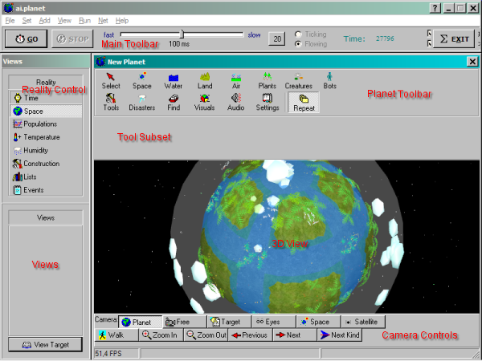
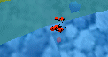

This page explains ai.planet's user interface in more detail. Many functions are
self-explaining so they will not be mentioned here.

The menus
Set/Names: This allows you to input your and your planet's name. This is
handy when more than one user is at the computer.
Set/Reload DNAs: Resets all the life forms' DNA's to their default state.
Set/Maximums: Lets you set the maximum amount allowed of each object. This
may be useful for population control or saving computer resources. Note that Icebergs
are set to 0 by default, so they will not appear in your world.
Set/Asteroids: Sets the amount of meteors lurking around the planet and
occasionally smashing onto it. Set to 0 to prevent this type of random disaster.
The main toolbar
Go/Stop: Starts and stops the flow of time, respectively.
Time flow slider: With this slider, you can set how many milliseconds are
between two ticks, when the simulation updates. The default of 20 corresponds to
50 ticks/sec. This default value can at every time be restored using the button
right of the slider.
Time flow - ticking/flowing: Flowing is the default, where the simulation
continues to run until the Stop button is pressed. When set to ticking, the simulation
runs for one tick on pressing Go, and then stops again.
Tick display: Shows how many ticks have elapsed since the creation of the
planet.
Reality controls
Populations: Opens a window with a population graph showing the development
of the various populations on the planet.
Temperature: Opens a temperature map. Yellow and orange is hotter, pink is
medium temperature, and blue and light blue is colder.
Humidity: Shows a humidity map. Brighter is more wet.
Construction: Shows a log of ai.planet's startup sequence.
Lists: Allows you to examine the attributes of every object on the planet.
Events: Shows you a log of the things that recently happened.
Planet toolbar
Select: You can select objects with the Select tool, get information about
them and make them do certain actions.
Space: With the tools in here, you can add suns and moons. You can't place
them manually, just click the button and it's there. You can also smash asteroids
onto your planet by selecting the Asteroid tool and clicking on a place on the
planet's surface where the incident should occur. To place a missile defense,
select the Defense tool and click on the planet. An orbital flak gun will appear in
space above the place you clicked.
Water: Add or remove water from your planet permanently with the Water and
Sponge tools. The Splash tool has the effect of your 240-pound uncle Eddie jumping
into the pool. You can also create icebergs.
Land: This collection of tools allows you to model the planet's surface.
Air: These tools give you advanced climate control by creating clouds and
modifying local temperature and humidity.
Plants: Lets you place all kinds of vegetation. There is also a plant clearer
tool.
Creaures: Allows you to set off all kinds of animals you like. There is also
a creature killer tool.
Bots: Here you can create and manage bots and give commands to them.
Tools: You can place some interesting special objects with this tool. Bubble
and Drain beacons spill, or suck up, water. ApplePops and OrangePops disgorge
fruit at a fixed interval. The AnyPop object generates an arbitrary object at the
tick interval you specify in the text field. And of course, you can place balls.
Disasters: Lets you decimate the life on your planet with some thrill effect.
Find: Click on the buttons to find a certain object and select it. You can
click multiple times on a button to select the next object of its kind.
Visuals: Allows to toggle certain graphical overlays and effects, some of which
are very processing intensive.
Audio: Lets you set the audio volume. You can also toggle visual trails
for objects here.
Settings: Tools for window management and image recording.
Repeat: With this switched on, the currently selected tool will be in effect as long as you
hold the mouse button. When switched off, the tool will be engaged once per mouse
click. This becomes important when it comes to the creatures tools. When you only
want to set off three or four creatures, switch Repeat off and click three or
four times. If you don't switch it off, you need a good reaction to release the mouse
button before there are too many creatures released.
Camera controls
These are always visible and allow you to explore your planet from all possible
perspectives. Especially the Eyes view is interesting, where you view the world as
the selected object. To get an overview and zoom out again, select Planet.
